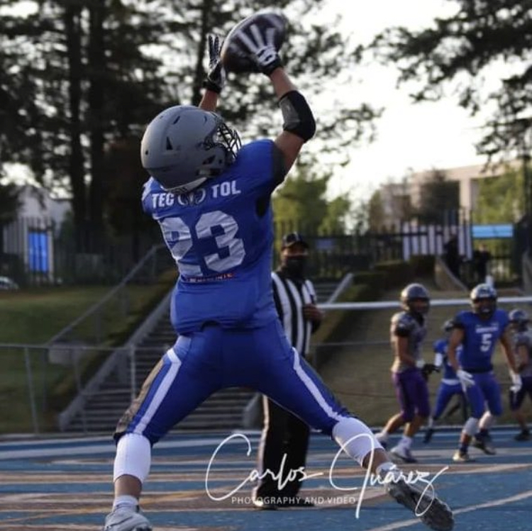

|  | Luis Javier es un excelente jugador, con su amplio conocimiento sobre el juego y su grán capacidad de leer huecos es un corredor excepcional, cuenta con gran velocidad y aceleración, asimismo, su habilidad para atrapar pases lo hace extremadamente versátil en el juego aéreo. |